Операционные системы. Часть 2 — «Ventoy» 🚀¶
В прошлой статье мы сделали загрузочную флешку, успешно воткнули её в комп коллеге и слегка подорвали его веру в «только GUI и ничего больше» 😏
Но ладно, пора и совесть включить — вернём человеку «винду». И сделаем это красиво: не одна система на весь носитель, а Ventoy с кучей ISO на одной флешке. Ну серьёзно, занимать 64 ГБ одним образом (да ещё и < 2 ГБ) — несолидно 🙃
Ventoy — бесплатная утилита с открытым исходным кодом, которая делает USB‑накопитель загрузочным так, что вы просто копируете на него ISO / WIM / IMG / VHD(x) / EFI‑файлы, а потом выбираете нужный в меню. Красота ❤️
План действий¶
-
Идём в Windows и берём нашу флешку. Форматируем как обычно. Тут ничего нового.
-
ISO Arch Linux у нас уже есть с прошлой статьи. Если нет — скачайте заранее. (И да, Arch Wiki — это святое 🔥)
-
Достать ISO Windows. И вот тут начинаются пляски… Примерно с 2022 года Microsoft ограничила скачивание образов для жителей нашей великой державы. Поэтому «просто с сайта» — не прокатывает даже с использованием трёх букв 😑
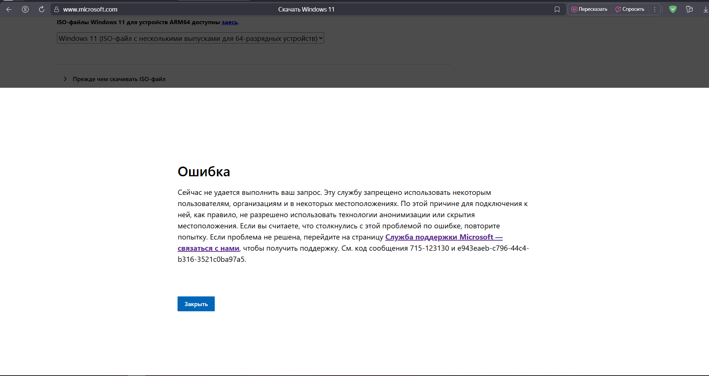
Качать с торрентов? Я не фанат (даже рутрекеру тут не доверяю) — слишком много мусора. Ищем официальный способ.
- Media Creation Tool — наше всё. Это фирменная утилита от Microsoft, которая готовит загрузочные образы Windows 10/11 напрямую с их серверов и без ключа продукта. Но сама по себе она тоже недоступна в нашей стране. Выручают ребята с GitHub:
👉 Репозиторий: https://github.com/AveYo/MediaCreationTool.bat
Нажимаем Code → Download ZIP, скачиваем архив и распаковываем куда удобно.
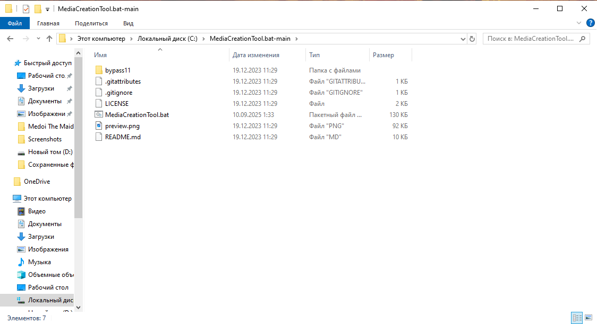
⚠️ Дальше по-хорошему пригодятся «три буквы» (вы поняли какие). Гайда по ним не будет — современные реалии такие. Работает ли батник без них именно у вас — проверяйте.
- Запускаем скрипт.
Открываем
MediaCreationTool.batиз распакованной папки.
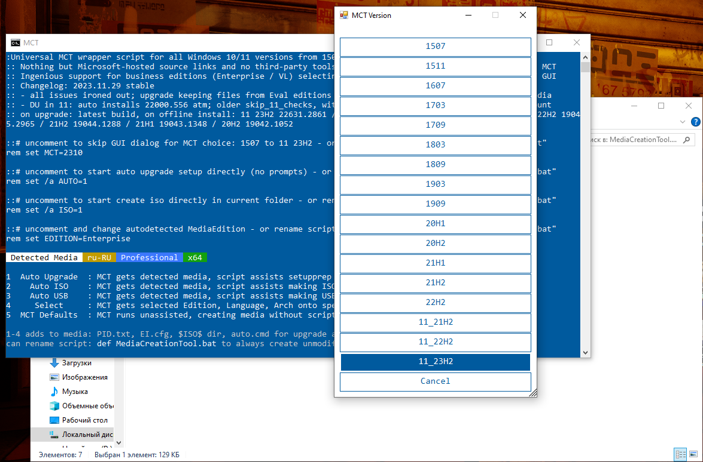
- Windows 10: выбираем 22H2 — она до сих пор максимально стабильная и удобная, как по мне. Эх, жаль, что поддержка не вечна 🥲
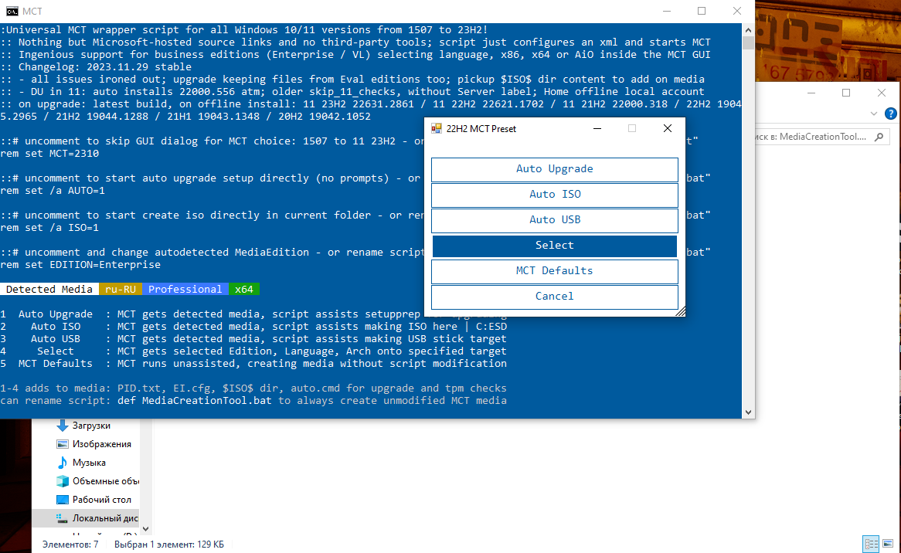
- Жмём Auto ISO. Скрипт сам запустит скачивание в стандартную папку (обычно диск
C:), если вы запускали его прямо из архива; либо внутрь распакованной папки. Просто ждём… ⏳
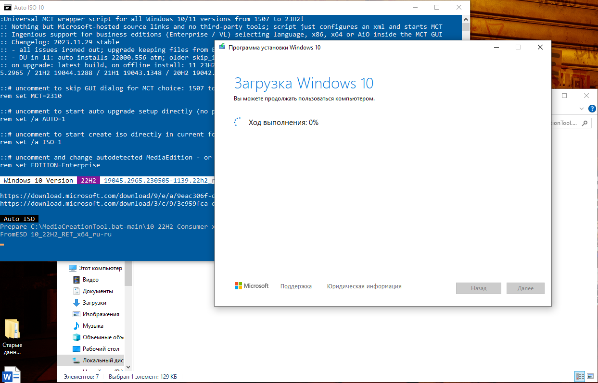
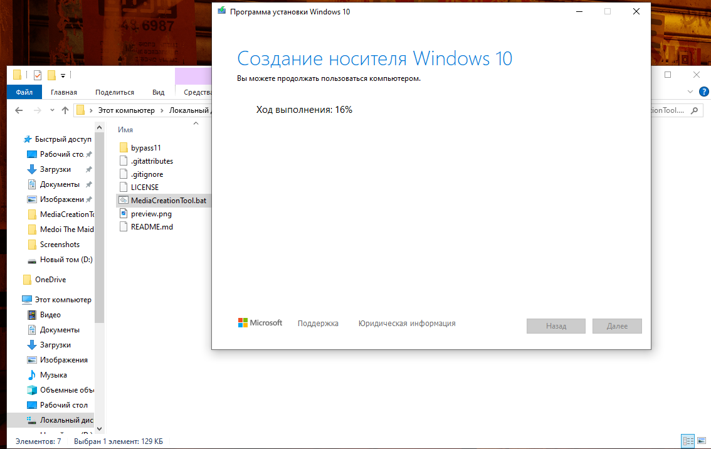
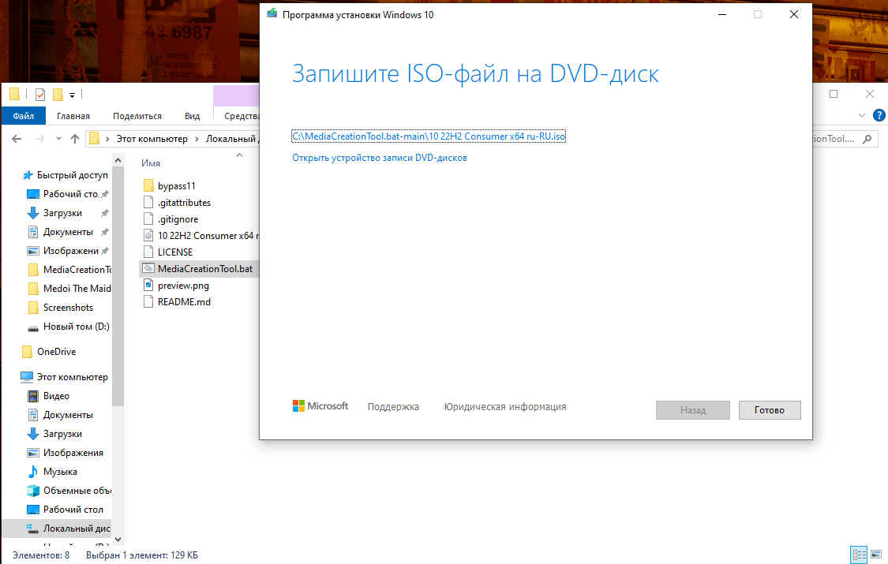
- Windows 11: делаем аналогично. Снова запускаем скрипт и выбираем последнюю 11_23H2 → Auto ISO → ждём.
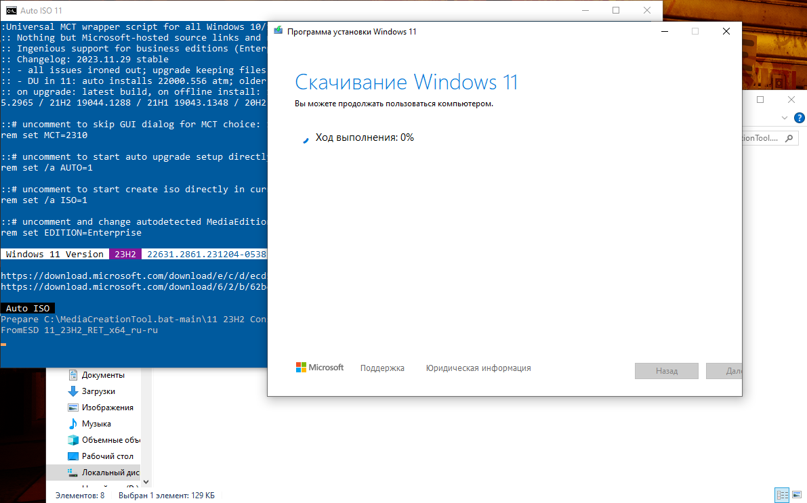
- В итоге у нас на диске лежат два ISO: Windows 10 (22H2) и Windows 11 (23H2).
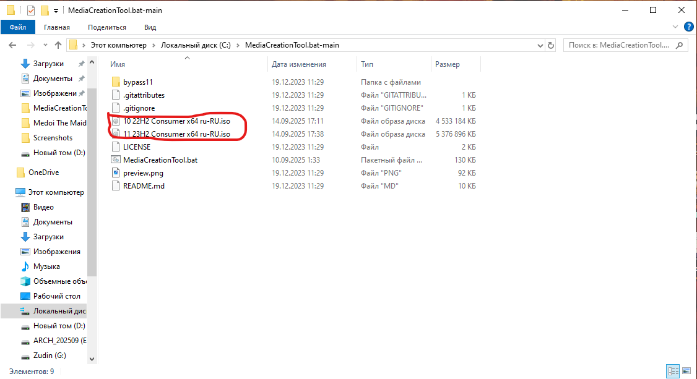
По времени это заняло около 30 минут (оба образа). У вас может быть быстрее/дольше — как повезёт с каналом ⚡
-
Теперь у нас есть три ISO: Arch Linux, Windows 10 22H2 и Windows 11 23H2.
Пора за Ventoy: 👉 https://ventoy.net
Заходим в Downloads, скачиваем ZIP‑архив, распаковываем.
-
Запускаем
Ventoy2Disk.exe.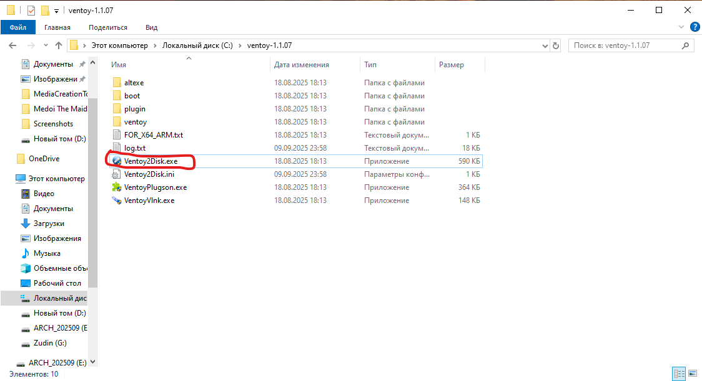
-
Выбираем нужную флешку → жмём Install → ждём.
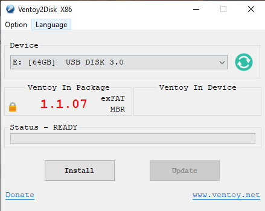
⚠️ Важно: Ventoy переразобьёт носитель под себя. Всё, что было на флешке, улетит в космос. Проверьте, что выбрана правильная буква диска. Не будьте как я 🤡
-
После установки флешка будет подписана как Ventoy — значит всё ок ✅
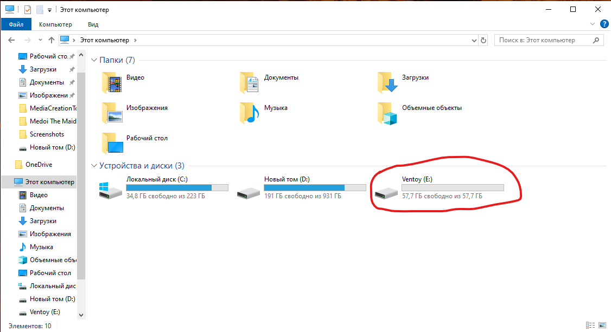
-
Копируем все три ISO на флешку. Просто перетаскиваем файлы — никаких «записей образов», «магии» и прочего шаманства.
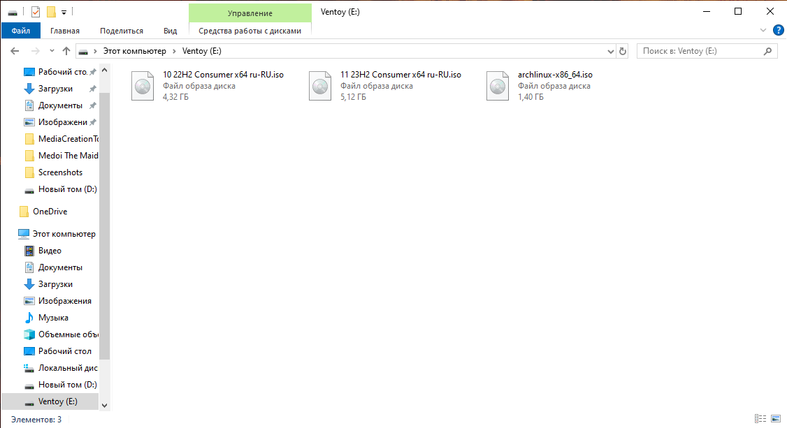
Это заняло ещё минут 30 🙂 Обратите внимание на общий объём — ISO‑шники винды ооочень толстые.
-
Перезагружаемся и грузимся с флешки (см. прошлую статью про выбор Boot Menu). Перед нами меню Ventoy:
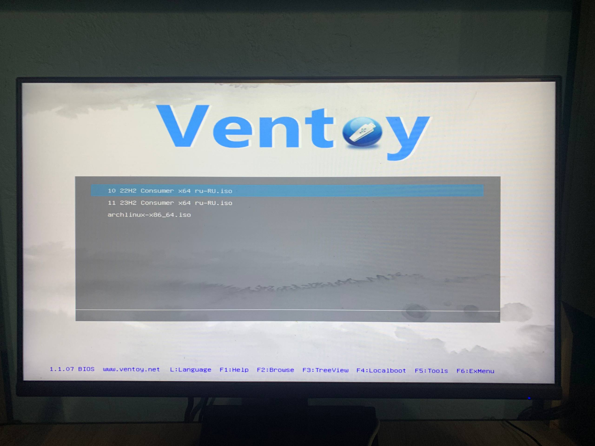
Тут уж извините — скриншот нормально сделать нельзя
¯\_(ツ)_/¯ -
Тестируем запуск каждого образа.
Arch Linux:
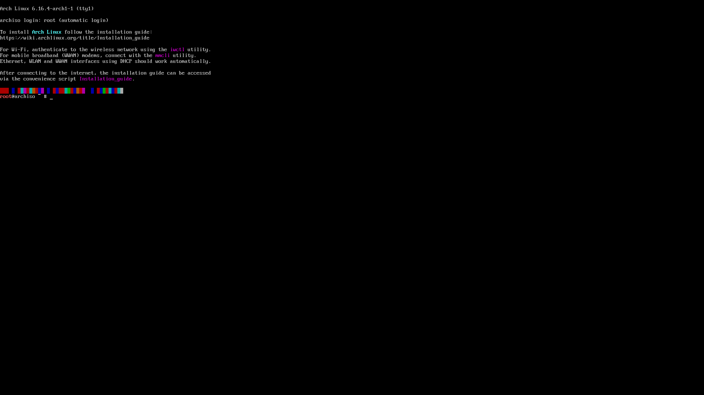
Windows 10 22H2:
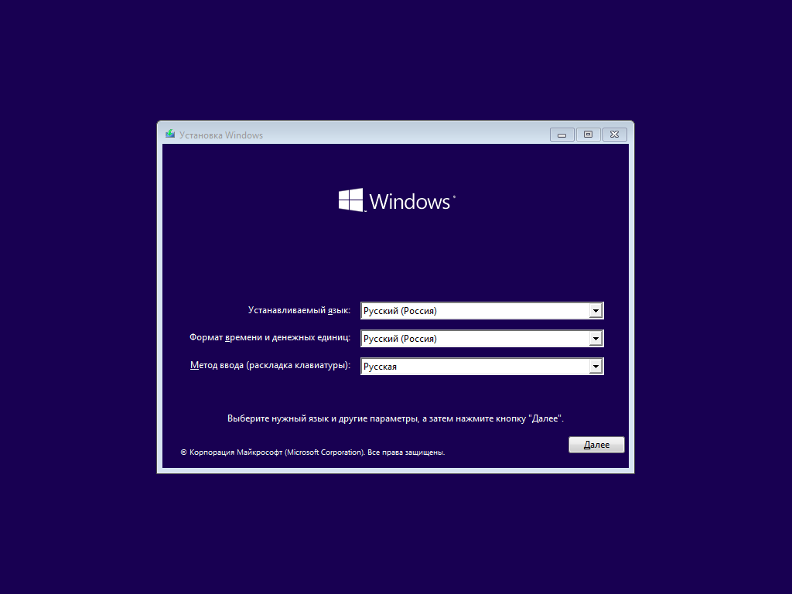
Windows 11 23H2:
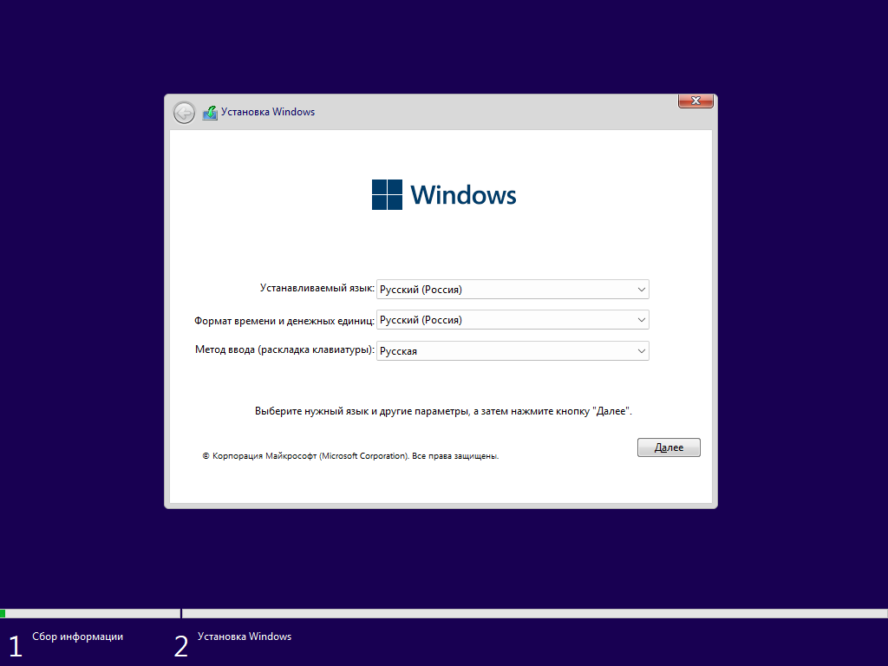
Всё стартует — красота! 🎯
Что в итоге¶
Теперь у нас универсальная флешка: и Linux поставить, и «винду» вернуть, и вообще выглядеть как человек, который думает на шаг вперёд 😉 Ventoy — вещь, которую я таскаю с собой всегда. Ещё можно закинуть на неё других дистрибутивов (например, Debian) — пусть будет богатый выбор.
Всем добра! Установка Arch Linux — в следующей статье 🖤🐧